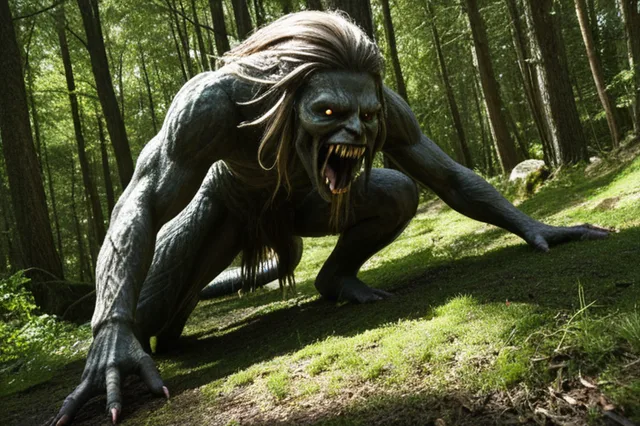

Фенрир
Фенрир (Fenrir) — огромный волк, сын Локи
Fenrir
Фенрир ("Обитающий в болоте") — огромный волк, сын Локи и Анграбоды. Рос в Асгарде, но боги испугались его силы и связали волшебной лентой Глейпнир. В Рагнарёке отомстит за сына и убьёт Одина.
Происхождение: Род Локи и Анграбоды
Германическое имя: Faurîsaz
Роль: огромный волк, сын Локи
Семья
Легенды
- Боги связали Фенрира волшебной лентой Глейпнир
- Тюр пожертвовал рукой, чтобы убедить волка довериться
- В Рагнарёке Фенрир убьёт Одина
- Видар отомстит за Одина и убьёт Фенрира
Источники
Прозаическая Эдда, Гюльвагиннинг
Связанные
Семья и род
ᚱ